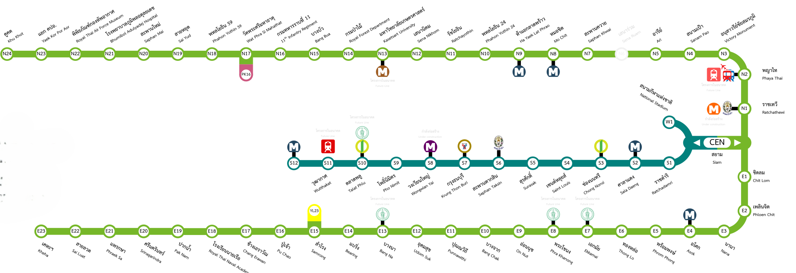

<body>
    <div class="container">
        <div class=" destination__container">
            <div class="socials"></div>
            <div class="content">
                <h1>CALCULATE<br />BTS<br /><span>FAREPRICE</span></h1>
                <p>
                    It encourages efficient navigation of Bangkok's urban
                    landscape, empowering users to explore the city's vibrant
                    neighborhoods and cultural landmarks with ease. By providing
                    clear fare information, the website enhances the travel
                    experience, enabling users to embark on their journeys with
                    confidence and curiosity.
                </p>
                <button routerLink="/search" class="btn-lg btn-primary">CALCULATE NOW</button>
            </div>
            <div class="destination__grid">
                <div class="destination__card">
                    
                    <div class="card__content">
                        <h4>Route Map for Silom line and Sukhumvit line</h4>
                        <p>
                            The Silom Line of Bangkok's BTS Skytrain runs from
                            the National Stadium to Bang Wa, covering 14
                            kilometers with 14 stations, including the Silom
                            business district and crossing the Chao Phraya
                            River.
                        </p>
                        <p>
                            The Sukhumvit Line extends from Kheha to Khu Khot,
                            spanning 54.25 kilometers with 47 stations. It
                            travels through key areas like Sukhumvit Road and
                            connects with the Silom Line at Siam Station.
                        </p>
                        <a href="https://en.m.wikipedia.org/wiki/File:Sukhumvit_Line_and_Silom_Line_Map.svg" target="_blank">
                            <button class="btn btn-link">Read More</button>
                        </a>
                    </div>
                </div>
            </div>
        </div>
    </div>
</body>